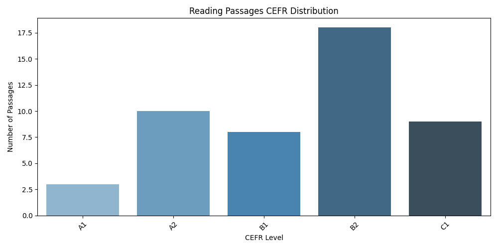
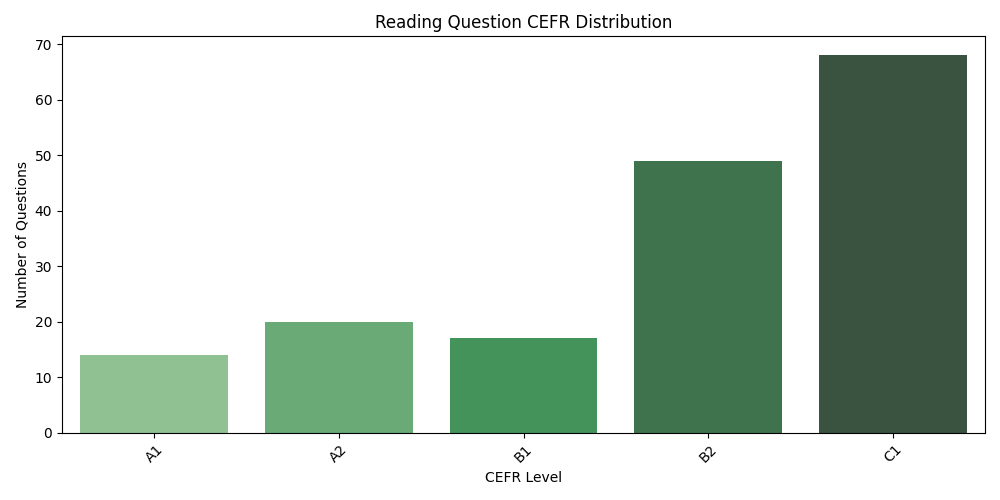
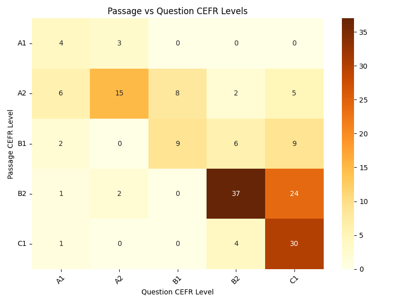

<!-- PA Reading CEFR Visualizations (below existing charts) -->

<section id="cefr-passages">
  <h2>Reading Passages CEFR Distribution</h2>
  
</section>

<section id="cefr-questions">
  <h2>Reading Question CEFR Distribution</h2>
  
</section>

<div style="display: flex; align-items: flex-start; gap: 2rem;">

  <aside style="flex: 1; max-width: 200px; font-size: 0.9em; line-height: 1.4em;">
    <h3>How to Read This Heatmap</h3>
    <ol>
      <li>Vertical axis: CEFR levels for each PA passage.</li>
      <li>Horizontal axis: CEFR levels for each PA question.</li>
      <li>Cell values show how many passage–question pairs share those levels.</li>
      <li>The diagonal highlights when question difficulty matches passage difficulty.</li>
      <li>Off-diagonal cells reveal questions harder or easier than their passages.</li>
    </ol>
  </aside>

  <section id="cefr-heatmap" style="flex: 3;">
    <h2>Passage vs Question CEFR Levels</h2>
    
  </section>

</div>
